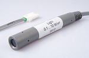

CMA0513© 2018, ProtoIt Platform: INFENTO |  |
Beschrijving:
Lichtsterkte-sensor. De lichtsterkte wordt in W/m2 gemeten, maar in ProtoIt wordt het signaal in procenten aangegeven.
Onderdelen:
CMA Lichtsensor
Zendt de signalen:
| Lichtsterkte (%) | De lichtsterkte, weergegeven in procenten. 0% is donker en 100% is fel licht. |